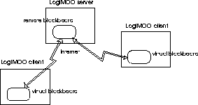

PAUL TARAU,
Département d'Informatique,
Université de Moncton, CANADA E1A-3E9
E-mail: tarau@info.umoncton.ca.
KOEN DEBOSSCHERE,
Vakgroep Elektronica en Informatiesystemen,
Universiteit Gent, E-mail: kdb@elis.rug.ac.be.
VERONICA DAHL, STEPHEN ROCHEFORT,
Logic and Functional Programming Group,
Department of Computing Sciences, Simon Fraser University,
E-mail:{veronica,rochfor}@cs.sfu.ca.
LogiMOO is a BinProlog-based
Virtual World running under Netscape and Explorer
for distributed group-work
over the INTERNET and user-crafted virtual
places, virtual objects and agents.
LogiMOO is implemented on top of a
multi-threaded blackboard-based logic programming
system (BinProlog) featuring
Linda-style coordination. Virtual blackboards
allow efficient mirroring and real-time
responsiveness over TCP/IP links,
while threads ensure high-performance
local client-server dynamics.
Embedding in Netscape allows advanced VRML and
HTML frame-based navigation and
multi-media support, while LogiMOO handles
virtual presence and acts as a
very high-level multi-media object broker.
User-friendliness is achieved through a
controlled English interface written in
terms of Assumption Grammars. Its language
coverage is extensible in that the user can
incorporate new nouns, verbs and adjectives
as needed by changes in the world. Immediate evaluation
of world knowledge by the parser yields
representations which minimize the unknowns.
We take advantage of the relative simplicity of
controlled language to provide as well an
easy adaptation to other natural languages
than English, with English-like representations
as a universal interlingua.
Keywords:
Virtual Worlds,
high-level HTML,VRML,CGI programming
distributed object brokerage,
blackboard-based logic programming, Linda coordination,
linear/intuitionistic assumptions,
client-server applications in Prolog,
embedded logic engines, natural language analysis,
control through speech, multilingual interface
MUDs and MOOs (Multi User Domains - Object Oriented) first introduced virtual presence and interaction in the context of games. Their direct descendents, Virtual Worlds, provide a strong unifying metaphor for various forms of net-walk, net-chat, and Internet-based virtual presence in general. They start where usual HTML shows its limitations: they do have state and require some form of virtual presence. ``Being there'' is the first step towards full virtualization of concrete ontologies, from entertainment and games to schools and businesses.
Some fairly large-scale projects (Intel's Moondo, Sony's Cyber Passage, Black Sun's CyberGate, Worlds Inc.'s WorldChat) converge towards a common interaction metaphor: an avatar represents each participant in a multi-user virtual world. Information exchange reuses our basic intuitions, with almost instant learnability for free.
The sophistication of their interaction metaphor, with VRML landscapes and realistic `avatars' moving in shared multi-user virtual spaces, will soon require high-level agent programming tools, once the initial fascination with `looking' human is not enough, and the automation of complex behavior becomes the next step. Towards this end, high-level coordination and deductive reasoning abilities are among the most important additions to various virtual world modeling languages.
Presently, despite their graphical sophistication, virtual worlds do not allow controlling behavior and object creation i.e., ``programming with words''. Yet their characteristics favor the use of natural language: each virtual world represents a particular domain of interest, so that its associated relevant subset of language is naturally restricted; and the command language into which natural language sentences would have to be parsed is formal and straightforward enough while being already relatively close to natural language.
In this article we present our work towards these goals, based on a set of embeddable logic programming components. Section 2 describes LogiMOO, a virtual world with natural language capabilities that makes use of linear and intuitionistic assumption techniques. Section 2.1 describes the coordination aspect; section 2.2, the LogiMOO kernel; section 2.3 describes our agent model; section 2.4 presents LogiMOO as a Netscape application; section 2.5 proposes a web of MOOs allowing LogiMOO access to Netscape based users with no access to BinProlog. Section 3 describes the main features of LogiMOO's natural language interface: coverage, dynamic knowledge handling, multisentential anaphoric reference, extensibility within the same language and to other languages, immediate evaluation, and our positional treatment of nouns. The last three sections respectively discuss related work, future work, and our conclusions.
LogiMOO [11, 23, 19] is a BinProlog-based Virtual World running under Netscape for distributed group-work over the Internet and user-crafted virtual places, virtual objects and agents. Netscape is used to implement CGI-based BinProlog remote toplevel interacting with a remote LogiMOO server (Fig. 1). Objects in LogiMOO are represented as hyper-links (URLs) towards their owners' home pages where their `native' representation actually resides in various formats (HTML, VRML, GIF, JPEG etc.). Embedding in Netscape allows advanced VRML or HTML frame-based navigation and multi-media support, while LogiMOO handles virtual presence and acts as a very high-level universal object broker.
The LogiMOO kernel behaves as any other MOO while offering a choice between interactive Prolog syntax and a Controlled English parser allowing people unfamiliar with Prolog to get along with the basic activities of the MOO: place and object creation, moving from one place to the other, giving/selling virtual objects, talking (`whisper' and `say').
In order to achieve this, we have incorporated natural language consultation capabilities into LogiMOO (see section 3). Our natural language front-end is extensible in the sense that it is easy for the user to tailor it to a particular virtual world through defining the verbs specific to that world and establishing links between lexical objects and their WWW representations. These definitions are done in user-friendly terms, with the system being responsible for their integration into the rest of the grammar and for their correspondence with actual LogiMOO objects and actions.
LogiMOO is built upon Multi-BinProlog [8, 10], i.e., BinProlog enriched with a Linda-like tuple space. Virtual blackboards [9] allow efficient mirroring of remote sites over TCP/IP links while Solaris 2.x threads ensure high-performance local client-server dynamics. The Multi-BinProlog blackboard is not just an add-on, but is really integrated in the BinProlog environment, featuring backtracking, guarded evaluation, etc.
A blackboard's basic characteristics are (i) it is persistent, (ii) the data are manipulated associatively (i.e., based on their content, rather than on their address), (iii) all accesses are automatically synchronized. These are precisely the requirements for a MOO: the status of the MOO should be stored somewhere, and it should not be volatile; if we are looking for a particular object in a MOO, we will always refer to it with a name, never with its address location; a MOO is multi-user, so it should be synchronized at any time.
The basic operations on the blackboard are: blackboard creation and deletion, the creation of processes (independently running Prolog goals), putting Prolog terms on the blackboard, removing terms from the blackboard and checking the presence of terms. Both the get and the read primitives can be blocking or non-blocking. Furthermore, there are some more advanced primitives like blackboard operations working on lists of terms instead of one term, operations to collect the complete contents of a blackboard, and so on.
LogiMOO's primitive operations are implemented on top of Multi-BinProlog's Linda-style operations [20]. We refer to [11, 23] for a description of the wide variety of blocking and non-blocking as well as non-deterministic blackboard operations (backtracking through alternative answers). For reasons of embeddability in multi-paradigm environments and semantic simplicity we have decided to drop non-determinism and return to a subset close to the original Linda operators (combined with unification), and a simple client-server architecture (although LogiMOO's design is now rapidly evolving towards a `web of interconnected worlds'). This turned out to be enough for simple (one-thread) agent programming.
out(X) puts X on the serverin(X) waits until it can take an object matching X from the server
all(X,Xs) reads the list Xs matching X currently on the server
run(Goal) starts a thread executing Goal
local_out(X) Puts private information X on the local default blackboard.
local_rd(X) Checks whether an object matching X is on the local blackboard.
halt stops current thread
The presence of the all/2 collector compensates for the lack of non-deterministic operations. Note that the only blocking operation is in/1, and that that blocking rd/1 is easily emulated in terms of in/1 and out/1. Non-blocking rd/1 is emulated with all/2 (see also Figure 2).
A number of derived operations are built on top of the primitive LogiMOO operations.
rd(X) Deterministic read.cout(X) Conditional out: Puts X on the server unless an object
matching X is found on the server.
cin(X) Conditional in: Takes an object matching X from the server
and fails if no such object is found.
forall(X,G) Executes goal G for all objects on the server matching X.
Verbs available in the MOO are defined through a set of Prolog predicates hiding the complexities of the distributed communication model through the usual metaphors: places (starting from a default lobby), ports, ability to `move' or teleport from one place to another, a wizard resident on the server, ownership of objects, the ability to transfer ownership and a built-in notifier agent watching for messages as a background thread.
Non-shared information is kept on the default local blackboard. The login procedure simply puts the name of the current user on the local blackboard, after enforcing unique identity on the server by sending a password to the server together with the name.
Whereami(P) unifies P with the location of the user's avatar.
Locally the name chosen by the user is accessible as:
whoami(X):-local_rd(i_am(X)).
The use of local blackboards allows high-speed access to private state information and allow implementation of security protocols.
To conditionally create a place (unless it exists) we use: dig(Place). To create a port (only when the links are already existing places), we use: port(P1,Dir,P2). To ``Teleport'' O from P1 to P2, we use: move(O,P1,P2).
move(O,P1,P2):-cin(contains(P1,O)),out(contains(P2,O)).
On top of teleporting, we implement go(Dir), craft(O) (which creates virtual objects with ownership), and give(Who, What).
go(Dir):- whereami(Place), rd(port(Place,Dir,NewPlace)), whoami(Me), move(Me,Place,NewPlace), forall(has(Me,O),move(O,Place,NewPlace)).
Note that forall/2 can be used to make someone's belongings follow him. As in the real world, this is usually done selectively on a subset of a user's belongings.
Creating things with craft/1 marks them with ownership:
craft(O):-whoami(Me), rd(contains(Place,Me)), out(contains(Place,O)), out(has(Me,O)).
Property transfer (useful for online sales and banking) is prototyped as follows:
gives(From,To,O):- cin(has(From,O)), out(has(To,O)). give(Who,What):- whoami(Me), cin(has(Me,What)), out(has(Who,What)).
Although expressing a sale predicate in terms
of give is easy, realistic transactions need a
sound security system, not yet implemented in LogiMOO .
.
Finally, look/0 recognizes specific objects and shows them in the most useful form. For instance, under the Netscape interface, users are shown as hyper-links to their home pages and objects created by a given user are shown as links relative to the user's home page.
Agents performing actions on objects can either fail, succeed, wait (to succeed) or warn about an error or exception.
The notifier is one of the simplest possible agents. It is automatically started from the login predicate as a background thread with run(notifier(Name)). The notifier's thread blocks until in(mes_to(Name,Mes,From)) succeeds and the notifier simply outputs the message.
notifier(Name) :-
in(mes_to(Name,Mes,From)),
notify(Mes,From),
notifier(Name).
The evaluation of whisper/2, defined as
whisper(To,Mes) :- whoami(Me),out(mes_to(To,Mes,Me)).
unblocks the matching in(mes_to(Name,Mes,From)), and consequently the notifier outputs the message with notify(Mes,From). More generally, distributed event processing is implemented by creating a `watching' agent for a given pattern.
Remote processing (Java-style) as well as security mechanisms are expressed easily, by creating `command server' thread:
% remote processing request
please(Who,What) :-
whoami(Requester),
out(please(Who,Requester,What)),
whisper(Who,'Please'(What)).
% a remote command processor
command_server :-
whoami(Me),
repeat,
in(please(Me,Requester,What)),
( friend_of(Me,Requester)->call(What),fail
; errmes(intruder(remote_action_attempted),Requester)
),
fail.
Clearly, command_server and notifier threads can be seen as `behavior components' of a unique agent. Moreover, they actually might cooperate in a synchronized way as each please/2 command triggers a whisper/2 action to be served by a notifier later.
Objects in LogiMOO are
represented as hyper-links (URLs) towards their owners' home pages
where their ``native'' representation actually resides in various
formats (HTML, VRML, GIF, JPEG, etc.).
are
represented as hyper-links (URLs) towards their owners' home pages
where their ``native'' representation actually resides in various
formats (HTML, VRML, GIF, JPEG, etc.).
LogiMOO redefines the Prolog toplevel for interacting with
Multi-BinProlog either through telnet/rlogin BinProlog's pipe-based lightweight Tcl/Tk interface, or through the
Web with Netscape . The Web interface uses extensively the latest
Netscape goodies:
BinProlog's pipe-based lightweight Tcl/Tk interface, or through the
Web with Netscape . The Web interface uses extensively the latest
Netscape goodies:
Netscape-based users are recognized as special as they do not keep local state (except for their name, password, and home page kept in the form itself). The stateless CGI Multi-BinProlog client spawn by a ``submit" Netscape action connects to a local persistent LogiMOO server. Compilation to C and shared dynamically linked libraries make using BinProlog competitive with Perl scripting.
The server periodically saves its state to a file, through a separate background thread while staying responsive to users. A telnet/rlogin-based ``wizard'' console helps monitoring LogiMOO from a remote computer.
The figure 3 shows the embedding of LogiMOO as a frame-based Netscape application.
3: LogiMOO as a frame-based Netscape application
Queries are submitted through the CGI POST method. BinProlog reads the standard input using the CONTENT_LENGTH environment variable and after a small filter cleans up hexadecimal escapes, it extracts the actual query and its variables through a list-of-characters-to-term conversion. Finally, using a simple trick, we map HTML query syntax to Prolog without any application specific parsing:
:-op(1199,xfy,(&)).
(login=L & passwd=P & home=H & query=Query) :-
login(L,P,H),sit,
metacall(Query).
Objects `crafted' by users are shown as URL's, relative to their homes. This allows users to `put' into LogiMOO objects of various formats (VRML, JPEG, WAV, AU) and gives multi-media capabilities for free. LogiMOO keeps the link while the actual object resides on the user's computer accessible by clicking on a link. This makes the link `hot' so that the user is free to update the actual object without having to notify LogiMOO.
We can even give the illusion that BinProlog commands from within LogiMOO actually allow arbitrary Web navigation through use of a JavaScript `one-liner', dynamically generated as answer to a query:
auto_show(URL,File) :-
make_cmd(['<body
onLoad="window.open(''',URL,'/',File,''',''_self'')">'],Cmd),
writeln([Cmd]).
For instance, typing:
auto_show('http://eve.info.umoncton.ca:8080/~logimoo','lobby.wrl')
in the LogiMOO Prolog query text area, will instantly show LogiMOO's VRML lobby in the Netscape output frame, from where the user can further explore links independently. Return to LogiMOO is achieved simply by by clicking on the `VRML' floor of the room. By using the _parent Netscape pseudo-target instead of _self the full window is replaced. With _blank or a named new target an additional Netscape browser is spawned, allowing independent navigation, while keeping LogiMOO on-screen.
Clearly, achieving exclusively in Prolog or any other existing LP or CLP the equivalent of what we have developed in about 1-man/month total programming time would require a significant effort. We are more and more convinced that embedding logic programming tools in a multi-paradigm environment can compensate for their lack of advanced visual and Internet programming abilities and, ultimately, make them competitive for commercial development despite their small `market share'.
As an embedded application, LogiMOO acts as a broker between various multi-paradigm, multi-media Netscape components. It therefore keeps (a minimum amount of) state and user information. Its full Prolog command language gives arbitrary extensibility through objects and agents. Although file transfers and various protocols are implementable with the underlying Multi-BinProlog system, we have chosen to represent non-symbolic objects as hyper-links towards their owner's WWW home. Our design philosophy was to duplicate as little existing components as possible while achieving as much functionality as possible. At some point, we expect that LogiMOO will grow by itself through user extensions, much more than our own development effort, as a truly open virtual world, together with its present and future VRML and Java-centric cousins.
Clearly, representing places with separate blackboards and
avatars/objects with processes/terms on local and remote blackboards
is the most natural representation, especially when thinking in terms
of a distributed `web of MOOs'. We will describe the basic ideas
behind LogiMOO in terms of a simpler mapping reminiscent from
client/server architectures, which also allows Netscape based users
not having BinProlog on their own computers to access LogiMOO. The
`world' is represented by a blackboard on a server. Virtual
blackboards that `mirror' the `world' on client processes are used if
the user has a copy of LogiMOO locally. Otherwise, connectionless
Netscape `hits' from the user's computer create short-lived CGI
clients on the computer hosting the server .
.
Multi-BinProlog blackboards come in two flavors [9]: there are local blackboards, primarily used for efficient communication and synchronization between processes running on the same (multi-)processor, and there are virtual blackboards that are primarily used for communication with processes running on other machines. A virtual blackboard is a kind of alias, or link to another (remote) blackboard. Logically, it cannot be distinguished from the remote blackboard itself. At the implementation level, a virtual blackboard does not contain data, but is just a local representation of the remote blackboard. All operations issued on a virtual blackboard are automatically forwarded to the remote blackboard. Furthermore, the remote blackboard can in turn be a virtual blackboard pointing to yet another remote blackboard. The last blackboard in a chain must always be a physical blackboard containing real data (see Figure 4).

4: Virtual and remote blackboards
The first version of LogiMOO has been built upon Multi-BinProlog [8, 10], i.e., BinProlog enriched with a Linda-like tuple space. The current version (which also interconnects with a new Java based multi-threaded Linda server) uses BinProlog's built-in Linda subsystem based on Unix and Winsock compatible platform independent socket operations.
A pure Linda-based language is not immediately suitable to support a MOO because a Linda-application consists of a number of processes that are created by one application in order to solve a given problem. Here, client processes must be able to connect and disconnect at any time. This requirement can be completely fulfilled by the concept of virtual blackboard. A client wanting to connect with a MOO, creates a local virtual blackboard, hooks it up to the MOO, and from then on, it can interact with the MOO in an unconstrained way by communicating with the local virtual blackboard.
To ensure interoperability between Windows 95 PCs and Unix machines we have conservatively implemented a generic socket package with operations specialized towards support for Linda operations and remote execution. A master server on a `well-known' host/port is used to exchange identification information among peers composed of a client and a `multiplexing' server. We refer to [21] for more details on the underlying BinProlog based Internet infrastructure used in the implementation of LogiMOO.
LogiMOO is one of the very few existing virtual worlds that can be controlled with natural language. The reason why we wanted to provide LogiMOO with a NL interface is fourfold:
The peculiar features of the world to be consulted- a virtual world- induced novel parsing features which are interesting in themselves: flexible handling of dynamic knowledge, immediate evaluation of noun phrase representations, allowing us to be economic with representation itself, inference of some basic syntactic categories from the context, a treatment of nouns as proper nouns, easy extensibility within the same language as well as into other natural languages. We shall examine each of these features in turn, after describing our natural language coverage.
It is interesting that the use of these features results in a completely deterministic parser (no backtrack).
Since LogiMOO handles mostly commands, outermost sentences will be imperative sentences. In these, the subject (the avatar that the user is controlling) is usually left implicit (notice however that embedded sentences, such as relative clauses, are descriptive rather than imperative, and therefore do include a subject). The user first enters a set of imperative subjectless sentences, and this input is sent through the parser to be converted into LogiMOO kernel predicates which are then executed to complete the actions. Verbs in the LogiMOO environment represent actions that can take place in the virtual world.
Because they are in imperative form, with their subject left implicit, LogiMOO sentences reduce to verb phrases, which can be of the following forms:
An intransitive verb.
A transitive verb followed by a noun.
A transitive verb followed by a noun phrase.
A transitive verb followed by a prepositional phrase.
A bitransitive verb followed by two noun phrases.
A bitransitive verb followed by a noun phrase and a prepositional phrase.
A prepositional phrase is defined as
A preposition followed by a noun phrase.
The noun phrase forms allowed are
A proper name.
A pronoun (anaphora).
A determiner followed by a noun.
In addition, we identify communication inputs which occur when a user wants their avatar to say, whisper or yell some message, e.g.,
say hi how are you.
This form of input is introduced by either:
The word ``whisper'' followed by a prepositional phrase followed by a message.
The word ``say'' followed by a message.
The word ``yell'' followed by a message.
Table 1 shows some sample parses.
Notice that the last command in the table produces the name (i.e., ``car'') which designates the object referred to by the noun phrase. This name is obtained by consulting the world knowledge to get the name of the car that John crafted. Ambiguity re. which car is meant among several in the world is avoided because the same name invoked by a different user, or by the same user in a different room, has a different representation internally. If, however, the user wants to craft more than one car in the same room, each should be differently designated in the command list (e.g., craft car1, give it to wizard, craft car2, give it to Stephen).
Because virtual worlds are eminently constructive, their dynamic changes must be accommodated in a flexible yet discriminatory manner. For instance, we must distinguish between static knowledge, i.e. world knowledge that exists before a user's sequence of world-changing commands, and dynamic knowledge, i.e. the new knowledge that results from those commands, since these may in some cases be tentative and subject to revision.
Static knowledge is obtained previous to the parsing of a sequence of natural language commands, through a small Prolog program which stores the current state of the world in predicates such as is_avatar(X), is_crafted(X), etc.
Dynamic knowledge is created by execution of a natural language command, and described with the aid of the same predicates as static knowledge, but these are put on a blackboard instead of simply extending the static world knowledge. Once the complete series of a user's commands has been executed, with later commands possibly having revised the results of previous commands in the same interaction, the resulting blackboard information is made available to be used in the next iteration, for gathering the state of the world before the next sequence of natural language commands.
Our system maintains yet another type of knowledge- hypothetical knowledge, accessible only by the parser, which helps it decide what parts of speech should be related. In particular, the knowledge that noun phrases are potential referents of an anaphora is kept through linear assumptions which are consumed upon encountering, for instance, a pronoun which might refer to the noun phrase hypothesized as a referent. For example, while analyzing the sequence of commands: ``Craft a flower, give it to John'', the parser hypothesizes that ``flower'' might turn out to be the referent of some pronoun appearing somewhere in the rest of the discourse, and upon encountering ``it'', the right object (namely, ``flower'') is associated with this pronoun. Although not shown above, gender and number information is also useful to check compatibility between a potential referent and an anaphora. A more complete analysis of anaphoric resolution through Assumption Grammars can be found in [7].
Our goal of language extensibility comes from the need to dynamically introduce new concepts into the world, and with them, new vocabulary in the analyzer. For instance, ``craft a gnu'' must be accepted even if no gnus exist in the virtual world yet, and no corresponding entry exists in the lexicon.
For this reason, our parser recognizes a noun from its context in the sentence rather than from any lexical definition. Adjectives can be treated similarly, by requiring them to be used in controlled fashion, e.g. within relative clauses, as in ``a car that is red'', so that the parser can infer adjectival function unequivocally from the word's position as an attribute. Note that since the world is described in terms of physical metaphors, adjectives will refer to such properties as color, shape, position, etc., and statements about them will in general be conditionless clauses (facts).
Allowing verbs to be inferred from context is more difficult. The syntactic definition part of defining new verbs can be done by example, i.e. by gleaning from the user information re. number of arguments from similarity with other proposed sample verbs, on which the user would have to just click (e.g., ``smile'' as a sample intransitive verb, ``look'' as a sample transitive verb, ``give'' as a sample bitransitive verb, etc.). This allows user-friendliness by not requiring the user to handle syntactic notions such as ``transitive'' or ``intransitive'', but instead leaving it to our interface to invisibly replicate a similar lexical definition from the analogy with existing sample words. But the predicates obtained from verbs as a result of parsing cannot simply translate into a constant (as for most nouns) or a unary predicate (as for most adjectives), since in general, they must translate into n-ary predicates corresponding to actions, and the verb being a new one, these actions can in general require description through full Prolog clauses. Our present solution is to require the user to provide a Prolog definition of the new command that the new verb refers to. Future work will investigate higher level solutions to this problem.
Of course, we can think of extending a grammar with other types of words than nouns, verbs and adjectives. However, we have chosen to focus on just these categories because they are the most likely to be application-dependent, and because in the case of verbs, they are the ones that will induce corresponding new LogiMOO commands.
Given that we accept only controlled language, and that some words, such as nouns and adjectives, do not need to be explicitly defined in a lexicon, but are inferred by the system from their first use in a command, we have a simple way of adapting our English analyzer into other languages.
In order to parameterize the language, we record which language we are using in the call, by means of an intuitionistic implication, e.g.:
?- language(spanish)=>parse([susurra,al,brujo]).
Lexical items will then be specialized according to the language, and will still induce an English-based semantic representation.
In order to explain how our rules do this, let us first observe that there are two types of rules in the English grammar which are language dependent:
For rules of the first type, we shall maintain the English predicate name regardless of the language of origin, as a kind of interlingua allowing us to go from one language to another.
For rules of the second type, we replace
and then we define an English and alternative lexicons as follows:
Notice that the language we're at is checked after the corresponding
word is found. This is to ensure speed, since in this way, the word to be parsed
will be recognized right away. In generation mode, we might want to switch
the order around.
Of course, more realistically, we will need features such as gender and number
in order to produce the right words in each language. For instance, whereas
in English we have only one lexical form for the definite article, whether it
is singular, plural, feminine or masculine, in Spanish we have four
different lexical items covering all these forms.
Commands get processed, as we saw, after their translation into
formulas from their natural language expression. These formulas are
conjunctions of actions expressed as predicates, whose arguments are
constants representing objects, people, places, etc. These constants
are produced by evaluating noun phrases on the fly during the
parse. In other words, instead of generating a formula to represent a
noun phrase, its components will be evaluated right away to generate a
constant satisfying the noun phrase's description. For instance, if
the command sequence is that of the two last sentences shown in table
1, parsing of ``the car that john crafted'' will directly produce
``car'' (the constant representing the entity that john crafted)
rather than a descriptive formula such as ``crafted(john,X),
is_a(X,car)''.
Because our system translates a noun into a constant
with same name, our treatment of nouns can be viewed as similar
to that of proper names. As
mentioned earlier, internally a distinction will be made between cars
crafted by different users or by the same user in different rooms, but
when the same user wants to refer to two distinct noun referents in the
same room, a different noun name must be used for each, e.g. ``car1''
and ``car2''. Thus ambiguity is dealt with automatically without needing
to resort to the explicit construction of internal unique identifiers
for each object as is the case in many other systems. This makes object
referencing very direct and allows us to proceed to the immediate evaluation
of noun phrases described in the previous section. The resulting formulas are therefore
simpler.
Adjectives can also be recognized by context, as explained earlier,
but will generate a predicate (e.g., red(X) from the adjective ``red'')
rather than a constant. This predicate, as we have seen, will evaluate
immediately rather than being inserted into the formula being constructed.
We do not know about other systems using logic programming for virtual
world simulation, although a large number of sophisticated Web-based
applications and tools are on the way to be implemented in LP/CLP
languages, for
instance [5, 15, 6, 4, 18, 14].
The closest application with a clear virtual world flavor is the
Ubique Doors (tm) server [16] which shows (Flat
Concurrent) Prolog lists in log files although we do not know
exactly how closely it is based on LP
technology. This server, combined with the Sesame (tm) client
emulates co-presence and cooperative work at virtual places
implemented on top of existing Web pages and ftp directories. On the
other hand applications of MOO technology usually combined with VRML
navigation are spreading quite fast. Among them, some of the most
impressive are:
Moreover, other declarative languages are starting to be
used for WWW applications. The Carnegie Mellon FoxNET
project [12] implements a full featured Web server.
Microsoft's Active
VRML proposal promises a declarative (purely functional) description
of 3D movement and behavior.
We have not found so far any MUD/MOO environments that handle NL
processing. Other MUD/MOO environments fall into two general
categories. Environments such as ``Moondo" by Intel [13],
``CyberGate" by BlackSun [3], and ``Cyber Passage" by
Sony [17], fall into the category of point and click
graphical environments. These completely avoid the need for NL
processing as the only text involved seems to be that for chatting
with other avatars. All movement and actions are completed with mouse
point and click actions. The second category, in which environments
such as MediaMOO [2] and the Avalon MUD [1] fall
into, are text-based systems. These systems lack NL processing and
focus on the use of pattern matching techniques to gather information.
Further, there is little work being done that is specific to the
advantages gained by connecting MUDs/MOOs to the World Wide Web using
logic programming such as the use of Prolog. As such, objects in
LogiMOO are represented as hyper-links (URLs) towards their owners'
home pages where their `native' representation actually resides in
various formats (HTML, VRML, GIF, JPEG, etc.). At the same time,
logic programming adds deductive database facilities in a uniform
framework, hypothetical reasoning tools (through Assumption Grammars),
and logic programming data and code use the same representation which
makes meta-programming easy.
Virtual Worlds technologies pioneered
by [3, 17, 24, 13] are becoming part
of `standard setting' applications like Netscape Communicator or
Internet Explorer. Most of them concentrate on the interaction
metaphor and/or visualization without a principled approach to the
underlying coordination logic.
Compared to other currently known MUD/MOO environments, this interface
bridges the gap between those that are graphical based and those that
are pattern matching based. By filling the gap, we are able to
provide the users with a natural form of textual interaction on which
graphical environments can still be built.
Although the current interaction is controlled completely through the
natural language interface, this does restrict efficiency of
maneuvering an avatar through the virtual worlds.
A Java based implementation, using a minimal set of logic programming
components (unification, associative search) is on its way. It will be
integrated in the existing LogiMOO framework on the server side. It
holds promise for smooth cooperation with existing Java class
hierarchies as well as various BinProlog based LogiMOO components.
A Java based Linda implementation, using a minimal set of logic
programming components (unification, associative search) has been
recently released (the Java TermServer, available at
http://clement.info.umoncton.ca/BinProlog). It allows to communicate
bidirectionally with the existing LogiMOO framework, allowing creation
of combined Java/Prolog mobile-agent programs. In particular, Java
applets can be used as front-end in browsers instead of the more
resource consuming CGIs LogiMOO is currently based on. It holds
promise for smooth cooperation with existing Java class hierarchies as
well as various BinProlog based LogiMOO components.
Intelligence and flexible metaprogramming on the logic programming
side combined with visualization and WWW programming abilities on the
Java side will allow easy component integration in various concrete
containers.
The LogiMOO system is currently being used in some
undergraduate classes as an enhancement to the class and as a testbed
for LogiMOO based virtual communities. Future directions are to include LogiMOO as a tool for
virtual tele-education where distance education students and
instructors may use LogiMOO as a teaching/learning environment.
W.r.t. the natural language processing component, the next
logical step is the use speech recognition in order to interact
with LogiMOO and though it with other interoperable components
running under Netscape as, for instance, VRML plugins.
We have shown that Prolog with appropriate coordination language
extensions is a practical tool for virtual world simulation.
A synergy between MOOs, Linda-style coordination
and Prolog's powerful associative search and dynamic object
creation facilities could be expected.
Multi-BinProlog's threads and virtual blackboards
make this synergy possible.
A logic programming approach to MOO programming has the advantage
of having all the right tools within a unified environment.
Embedding in Netscape ensures implicit platform independence
of our server and seamless cooperation with present
and future third party Netscape tools.
We have also presented a natural language interface to LogiMOO which takes a controlled
form of English and translates it into LogiMOO kernel predicates which
are executed as actions in the virtual environment. Pronominal
references in multisentential input are allowed. Extensibility within
the same language is achieved by inferring new nouns and adjectives from
their context in the sentences, and by a dialogue with the user that
allows new verbs and their corresponding LogiMOO actions to be described
in a user-friendly way. Extensibility into different natural
languages is obtained
not through the usual machine translation approach, but by abstracting a
core set of language independent rules from our English parser and then
adding a language specific lexicon
(currently available for English, French, Spanish) to complete the
grammar definition. A simple change of one lexicon module into another effects
the language change invisibly, so that users across the world can type in
their interactions in their own language, these are recorded in a ``neutral''
but invisible form, from which any retrieval continues to respect the language
of the caller.
Special thanks go to Daniel Perron
for long discussions that helped to come out with the initial idea of
LogiMOO and useful comments during the development of the project.
verb(give(X,Y)):- @give.
%English lexicon: % Spanish lexicon:
@give:- #give, -english. @give:- #de, -spanish.
Immediate Evaluation
Treatment of nouns
Related work
Future work
Conclusion
Acknowledgments
The first and the the third authors thank for support
from NSERC (grants OGP0107411 and 611024), the
second author is research associate with the Fund for Scientific
Research - Flanders (Belgium).
Paul Tarau
Tue Sep 2 21:06:52 ADT 1997